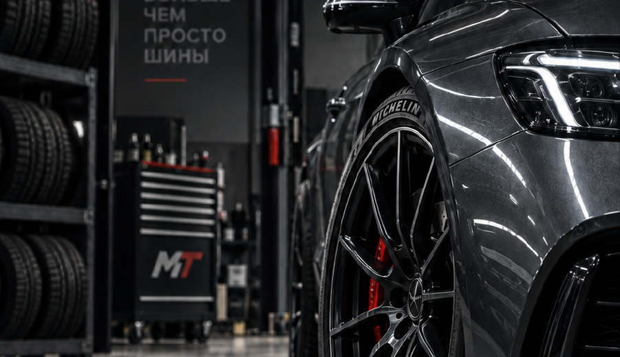

05 / ВЫХОД НА ОРБИТУ
VERTO STUDIO / SELECTED WORK
Работы
на орбите.
Один коммерческий кейс, собственный продукт и три концепции. Каждая работа начинается с ясной задачи.

01 / MASTER TIRES / CASE STUDY06—10 / МАРШРУТЫ
Точки, к которым
можно вернуться.
Портфолио сохраняет коммерческие работы отдельно от демонстрационных концепций.